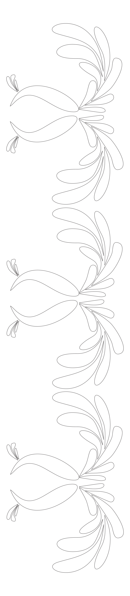

A series of geometric reinterpretations of traditional Indian textile borders. Inspired by zari embroidery and block-printed saris, each pattern distills ornament into rhythm, symmetry, and restraint.
